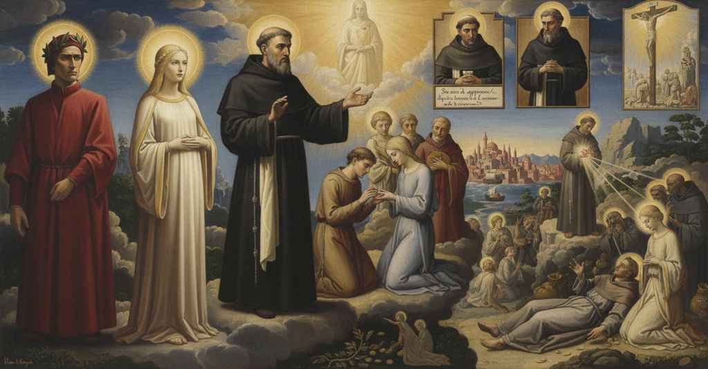

Paradiso — Canto 11

Tommaso d'Aquino, per risolvere i dubbi di Dante, narra la vita di San Francesco come guida della Chiesa e sposo di Madonna Povertà, per poi lamentare la corruzione del proprio ordine domenicano. Thomas Aquinas resolves Dante's doubts by narrating the life of Saint Francis, guide of the Church and husband of Lady Poverty, and then laments the corruption of his own Dominican order. トマス・アクィナスは、ダンテの疑念を解くため、教会の導き手であり「貧困」という貴婦人の夫であった聖フランチェスコの生涯を語り、その後で自身のドミニコ会の堕落を嘆く。
1
O insensata cura de’ mortali,
O senseless care of mortals,
ああ、人間たちの無分別な心労よ、
2
quanto son difettivi silogismi
how defective are the syllogisms
なんと欠陥のある三段論法であることか
3
quei che ti fanno in basso batter l’ali!
those that make you beat your wings below!
そなたを地上で翼ばたきさせるものは！
4
Chi dietro a iura e chi ad amforismi
One after law and one after aphorisms
ある者は法学を、ある者は医術を追い、
5
sen giva, e chi seguendo sacerdozio,
was going, and one following the priesthood,
進み、ある者は聖職を追い、
6
e chi regnar per forza o per sofismi,
and one to rule by force or by sophisms,
ある者は力や詭弁で統治しようとし、
7
e chi rubare e chi civil negozio,
and one to rob and one to do civil business,
ある者は盗み、ある者は市民の商いに、
8
chi nel diletto de la carne involto
one in the delight of the flesh involved
ある者は肉の快楽にまみれて
9
s’affaticava e chi si dava a l’ozio,
toiled, and one who gave himself to idleness,
骨折り、ある者は怠惰に身を委ねていた、
10
quando, da tutte queste cose sciolto,
when, from all these things released,
そのとき、これらすべてのことから解き放たれ、
11
con Bëatrice m’era suso in cielo
with Beatrice I was up in heaven
ベアトリーチェと共に私は天に昇り
12
cotanto glorïosamente accolto.
so gloriously received.
あれほど栄光のうちに迎えられていたのだ。
13
Poi che ciascuno fu tornato ne lo
After each one had returned to the
それぞれが皆、元の場所へと
14
punto del cerchio in che avanti s’era,
point of the circle in which he was before,
以前いた円の地点に戻ると、
15
fermossi, come a candellier candelo.
he stopped, like a candle in a candelabrum.
燭台の蝋燭のように、静止した。
16
E io senti’ dentro a quella lumera
And I heard within that luminary
そして私は、あの光の中で感じた
17
che pria m’avea parlato, sorridendo
that had first spoken to me, smiling
先に私に語りかけた者が、微笑みながら
18
incominciar, faccendosi più mera:
begin, making itself more pure:
より純粋な輝きを放ち、語り始めるのを。
19
«Così com’ io del suo raggio resplendo,
“Just as I am resplendent with its ray,
「私がその光線で輝くように、
20
sì, riguardando ne la luce etterna,
so, by looking into the eternal light,
そう、永遠の光を見つめることで、
21
li tuoi pensieri onde cagioni apprendo.
I learn your thoughts and whence they are caused.
私はそなたの思考がどこから生じるかを学ぶ。
22
Tu dubbi, e hai voler che si ricerna
You doubt, and you have the will that be re-sifted
そなたは疑い、そして望んでいる、明確にされることを
23
in sì aperta e ’n sì distesa lingua
in so open and in so plain a language
これほど開かれ、これほど平易な言葉で
24
lo dicer mio, ch’al tuo sentir si sterna,
my speech, that it may be level to your sense,
私の言葉が、そなたの理解に沿うように、
25
ove dinanzi dissi: “U’ ben s’impingua”,
where before I said: ‘Where one fattens well,’
私が先に言った『善く肥えるところ』、
26
e là u’ dissi: “Non nacque il secondo”;
and there where I said: ‘A second has not been born’;
そして私が言った『二人目はいなかった』という箇所について。
27
e qui è uopo che ben si distingua.
and here it is needful that one distinguish well.
ここでは、よく区別することが肝要である。
28
La provedenza, che governa il mondo
The providence that governs the world
世界を統べる摂理は、
29
con quel consiglio nel quale ogne aspetto
with that counsel in which every created
いかなる被造物の眼差しも
30
creato è vinto pria che vada al fondo,
gaze is vanquished before it reaches the bottom,
その深淵に達する前に打ち負かされるほどの深慮をもって、
31
però che andasse ver’ lo suo diletto
so that toward her delight might go
その愛する者へと向かうように、
32
la sposa di colui ch’ad alte grida
the spouse of Him who with a loud cry
大いなる叫びをもって彼女を
33
disposò lei col sangue benedetto,
espoused her with His blessed blood,
祝福された血潮で娶った方の花嫁が、
34
in sé sicura e anche a lui più fida,
in herself secure and also more faithful to Him,
自身において安らかに、そして彼により忠実であるために、
35
due principi ordinò in suo favore,
ordained two princes in her favor,
その花嫁のために二人の指導者を定めた、
36
che quinci e quindi le fosser per guida.
who on this side and that should be her guides.
こちらとあちらから彼女を導くために。
37
L’un fu tutto serafico in ardore;
The one was all seraphic in ardor;
一人は燃えるような情熱において全くセラフィムのようであった。
38
l’altro per sapïenza in terra fue
the other for wisdom on earth was
もう一人は知恵において地上で
39
di cherubica luce uno splendore.
a splendor of cherubic light.
ケルビムの光の輝きであった。
40
De l’un dirò, però che d’amendue
Of the one I will speak, because of both
私はその一人について語ろう、なぜなら二人について
41
si dice l’un pregiando, qual ch’om prende,
one speaks in praising one, whichever one takes,
どちらを選んで称賛しても、一人を語ることは
42
perch’ ad un fine fur l’opere sue.
because to one end were their works.
その行いは一つの目的にあったのだから。
43
Intra Tupino e l’acqua che discende
Between the Topino and the water that descends
トゥピーノ川と流れ下る水の間に
44
del colle eletto dal beato Ubaldo,
from the hill chosen by the blessed Ubaldo,
祝福されたウバルドに選ばれし丘から、
45
fertile costa d’alto monte pende,
a fertile slope of a high mountain hangs,
高い山の肥沃な斜面が垂れ下がる、
46
onde Perugia sente freddo e caldo
from where Perugia feels cold and heat
そこからペルージャはソール門より寒さと暑さを感じ、
47
da Porta Sole; e di rietro le piange
from Porta Sole; and behind it weep
その後ろでは泣いている
48
per grave giogo Nocera con Gualdo.
for their heavy yoke Nocera with Gualdo.
重い軛にノチェーラとグアルドが。
49
Di questa costa, là dov’ ella frange
From this slope, there where it breaks
この斜面から、その険しさが
50
più sua rattezza, nacque al mondo un sole,
its steepness most, a sun was born into the world,
最も和らぐ場所で、世に一つの太陽が生まれた、
51
come fa questo talvolta di Gange.
as this one sometimes is from the Ganges.
この太陽が時折ガンジスから昇るように。
52
Però chi d’esso loco fa parole,
Therefore, whoever of that place speaks,
それゆえ、その場所について語る者は、
53
non dica Ascesi, ché direbbe corto,
should not say Ascesi, for that would be to say too little,
アッシジと言ってはならぬ、それでは言葉が足りぬ、
54
ma Orïente, se proprio dir vuole.
but Orient, if he would speak properly.
オリエンテ（東方）と言うべきだ、正しく言いたいならば。
55
Non era ancor molto lontan da l’orto,
He was not yet very far from his rising,
彼はその誕生からまだ遠からぬうちに、
56
ch’el cominciò a far sentir la terra
when he began to make the earth feel
大地をして感じさせ始めた
57
de la sua gran virtute alcun conforto;
some comfort from his great virtue;
彼の偉大な徳による幾ばくかの慰めを。
58
ché per tal donna, giovinetto, in guerra
for for a certain lady, as a youth, he ran into war
というのも、ある貴婦人のために、若くして、父との
59
del padre corse, a cui, come a la morte,
with his father, for her to whom, as if to death,
戦いに赴いたからだ。その貴婦人には、死と同じく、
60
la porta del piacer nessun diserra;
the gate of pleasure no one unbars;
誰も快楽の門を開けることはない。
61
e dinanzi a la sua spirital corte
and before his spiritual court
そして彼の霊的な宮廷の前で
62
et coram patre le si fece unito;
et coram patre he was united to her;
そして父の面前で、彼女と結ばれた。
63
poscia di dì in dì l’amò più forte.
then from day to day he loved her more intensely.
その後、日ごとに彼女をますます強く愛した。
64
Questa, privata del primo marito,
She, deprived of her first husband,
この貴婦人は、最初の夫に先立たれ、
65
millecent’ anni e più dispetta e scura
for eleven hundred years and more, scorned and obscure,
千百年以上もの間、蔑まれ、忘れられ
66
fino a costui si stette sanza invito;
had remained without a suitor until this man;
この方まで招かれることなくいた。
67
né valse udir che la trovò sicura
nor did it avail to hear that she was found secure
彼女がアミクラーテと共に安らかにいるのを見つけたという
68
con Amiclate, al suon de la sua voce,
with Amyclas, at the sound of his voice,
彼の声を聞いても、何の役にも立たなかった、
69
colui ch’a tutto ’l mondo fé paura;
by him who made the whole world fear;
全世界を恐怖に陥れたその男も。
70
né valse esser costante né feroce,
nor did it avail to be so constant and fierce,
彼女が揺るぎなく、また猛々しかったことも役に立たなかった、
71
sì che, dove Maria rimase giuso,
that where Mary remained below,
マリアが下に留まった場所で、
72
ella con Cristo pianse in su la croce.
she wept with Christ up on the cross.
彼女はキリストと共に十字架の上で泣いたほどに。
73
Ma perch’ io non proceda troppo chiuso,
But lest I proceed too obscurely,
だが、私が閉ざしすぎて進まぬように、
74
Francesco e Povertà per questi amanti
for these lovers take Francis and Poverty
フランチェスコと貧困を、これら恋人たちとして
75
prendi oramai nel mio parlar diffuso.
from now on in my widespread speech.
今や私の広げた言葉の中に受け取りたまえ。
76
La lor concordia e i lor lieti sembianti,
Their harmony and their joyous looks,
彼らの調和と喜ばしき姿、
77
amore e maraviglia e dolce sguardo
love and wonder and sweet gaze
愛と驚きと優しい眼差しは
78
facieno esser cagion di pensier santi;
were the cause of holy thoughts;
聖なる思いの原因となっていた。
79
tanto che ’l venerabile Bernardo
so that the venerable Bernard
それゆえ、かの尊きベルナルドは
80
si scalzò prima, e dietro a tanta pace
first went barefoot, and after so great a peace
真っ先に裸足となり、かくも大いなる平安を追い
81
corse e, correndo, li parve esser tardo.
he ran and, running, seemed to himself to be slow.
走ったが、走りながらも、自分を遅いと思った。
82
Oh ignota ricchezza! oh ben ferace!
O unknown riches! O fertile good!
おお、知られざる富よ！おお、実り豊かな善よ！
83
Scalzasi Egidio, scalzasi Silvestro
Egidius goes barefoot, Sylvester goes barefoot
エジディオも裸足となり、シルヴェストロも裸足となる
84
dietro a lo sposo, sì la sposa piace.
after the groom, so pleasing is the bride.
花婿の後に、かくも花嫁は喜ばれる。
85
Indi sen va quel padre e quel maestro
Thence goes that father and that master
かくして、かの父、かの師は進み行く
86
con la sua donna e con quella famiglia
with his lady and with that family
彼の貴婦人と、かの家族と共に
87
che già legava l’umile capestro.
that the humble cord already bound.
すでに卑しい綱を締めていた。
88
Né li gravò viltà di cuor le ciglia
Nor did cowardice of heart weigh down his brow
心の卑しさも彼の瞼を重くはしなかった
89
per esser fi’ di Pietro Bernardone,
for being the son of Pietro Bernardone,
ピエトロ・ベルナルドーネの子であることや、
90
né per parer dispetto a maraviglia;
nor for appearing wondrously despised;
驚くほど卑しく見えることによっても。
91
ma regalmente sua dura intenzione
but regally he opened his harsh intention
だが王のように、彼の厳格な意図を
92
ad Innocenzio aperse, e da lui ebbe
to Innocent, and from him he had
インノケンティウスに開き、彼から得た
93
primo sigillo a sua religïone.
the first seal for his order.
彼の修道会への最初の印璽を。
94
Poi che la gente poverella crebbe
After the poor folk grew
貧しき人々がこの方の後に増え、
95
dietro a costui, la cui mirabil vita
behind this man, whose wondrous life
その驚くべき生涯は
96
meglio in gloria del ciel si canterebbe,
would better be sung in the glory of heaven,
天の栄光の中で歌われる方がよいだろうが、
97
di seconda corona redimita
with a second crown was wreathed
第二の冠で飾られたのは、
98
fu per Onorio da l’Etterno Spiro
by Honorius from the Eternal Spirit
ホノリウスを通して、永遠の聖霊からであった
99
la santa voglia d’esto archimandrita.
the holy will of this archimandrite.
この修道院長の聖なる願いは。
100
E poi che, per la sete del martiro,
And then when, for the thirst of martyrdom,
そして、殉教への渇望から、
101
ne la presenza del Soldan superba
in the proud presence of the Sultan
尊大なスルタンの面前で
102
predicò Cristo e li altri che ’l seguiro,
he preached Christ and the others who followed him,
キリストと、彼に従った者たちを説き、
103
e per trovare a conversione acerba
and for finding the people too unripe for conversion
そして改宗には未熟すぎると
104
troppo la gente e per non stare indarno,
and not to remain in vain,
人々を見出し、無駄に留まらぬために、
105
redissi al frutto de l’italica erba,
he returned to the fruit of the Italian grass,
イタリアの草の実りへと帰った。
106
nel crudo sasso intra Tevero e Arno
on the harsh rock between Tiber and Arno
テヴェレとアルノの間の険しい岩山で
107
da Cristo prese l’ultimo sigillo,
from Christ he received the last seal,
キリストから最後の印璽を受けた、
108
che le sue membra due anni portarno.
which his limbs bore for two years.
それを彼の四肢は二年間帯びていた。
109
Quando a colui ch’a tanto ben sortillo
When to him who destined him for so much good
かくも大いなる善のために彼を選んだ御方が
110
piacque di trarlo suso a la mercede
it pleased to draw him up to the reward
彼を報いの許へ引き上げることを喜ばれた時、
111
ch’el meritò nel suo farsi pusillo,
that he merited in making himself small,
彼が自らを卑しくすることで得た
112
a’ frati suoi, sì com’ a giuste rede,
to his friars, as to his rightful heirs,
彼の兄弟たちに、正当な相続人として、
113
raccomandò la donna sua più cara,
he commended his most dear lady,
彼の最も愛する貴婦人を託し、
114
e comandò che l’amassero a fede;
and commanded that they love her faithfully;
そして誠実に彼女を愛するよう命じた。
115
e del suo grembo l’anima preclara
and from her bosom his illustrious soul
そして彼女の懐から、その輝かしい魂は
116
mover si volle, tornando al suo regno,
willed itself to move, returning to its kingdom,
動き出すことを望み、その王国へ帰り、
117
e al suo corpo non volle altra bara.
and for its body wanted no other bier.
その体には他の棺を望まなかった。
118
Pensa oramai qual fu colui che degno
Think now what he was, who was a worthy
さあ考えよ、いかなる者であったかを、ふさわしき
119
collega fu a mantener la barca
colleague to keep the bark
同僚であったか、舟を保つための
120
di Pietro in alto mar per dritto segno;
of Peter on the high seas on its right course;
ペテロの舟を公海で正しき印へと。
121
e questo fu il nostro patrïarca;
and this was our patriarch;
そしてこれこそが我らが創始者であった。
122
per che qual segue lui, com’ el comanda,
wherefore he who follows him, as he commands,
それゆえ彼に従う者は、彼が命じるように、
123
discerner puoi che buone merce carca.
you may discern loads good merchandise.
汝もわかるであろう、良き荷を積んでいると。
124
Ma ’l suo pecuglio di nova vivanda
But his flock, for new fodder,
しかし彼の羊の群れは、新たな食物に
125
è fatto ghiotto, sì ch’esser non puote
has grown so greedy that it cannot but
貪欲となり、かくして避けられぬのだ
126
che per diversi salti non si spanda;
be scattered through diverse pastures;
様々な牧場へと散り散りになることが。
127
e quanto le sue pecore remote
and the more his sheep remote
そしてその羊たちが遠く離れ
128
e vagabunde più da esso vanno,
and wandering go from him,
さまよいながら彼から去れば去るほど、
129
più tornano a l’ovil di latte vòte.
the more they return to the fold empty of milk.
ますます乳なく空しく羊の檻に戻る。
130
Ben son di quelle che temono ’l danno
There are indeed some that fear the harm
確かに、害を恐れて
131
e stringonsi al pastor; ma son sì poche,
and keep close to the shepherd; but they are so few,
牧者に寄り添う者もいる。だがそれはあまりに少なく、
132
che le cappe fornisce poco panno.
that for their cowls little cloth is furnished.
その頭巾を作るのに僅かな布で足りるほどだ。
133
Or, se le mie parole non son fioche,
Now, if my words are not faint,
さて、もし我が言葉が弱々しくなく、
134
se la tua audïenza è stata attenta,
if your hearing has been attentive,
汝の聞く耳が注意深くあり、
135
se ciò ch’è detto a la mente revoche,
if what I have said you recall to mind,
語られたことを心に呼び戻すならば、
136
in parte fia la tua voglia contenta,
in part your desire will be satisfied,
汝の望みは部分的に満たされるであろう、
137
perché vedrai la pianta onde si scheggia,
for you will see the plant from which one splinters,
なぜなら汝は、そこから木片が削られる植物を見るであろうし、
138
e vedra’ il corrègger che argomenta
and will see the rebuke that means
そして「虚栄に走らねば、よく肥える」と
139
“U’ ben s’impingua, se non si vaneggia”».
‘Where one fattens well, if one does not stray.’”
論じるその箴言の真意を見るであろうからだ」。